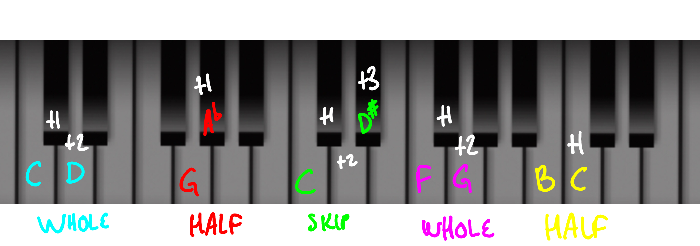

Steps
Half-step = +1
Whole-step = +2
Skip = +3
•A type of interval for adjacent letters.
•Stepwise motion is defined as moving melodically up or down by letter.
•The type of step is determined by the distance of the two notes.
•Steps are used in succession to make up scales like this:
WWHWWWH
Some examples:
